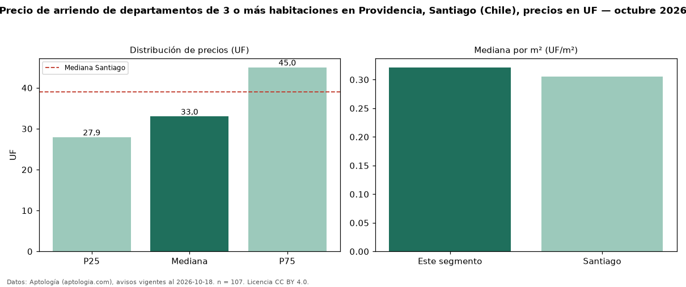

Precio de arriendo de departamentos de 3 o más habitaciones en Providencia, Santiago (Chile), precios en UF — octubre 2026
Con 107 avisos vigentes, el canon mediano de departamentos de 3 o más habitaciones en arriendo en Providencia, Santiago (Chile) es UF 33,00 al mes. Frente a la mediana de Santiago para departamentos de 3 o más habitaciones (UF 39,00), queda 15 % por debajo. Por metro cuadrado, la mediana es UF 0,32/m² al mes (n = 79 avisos con área), 5 % por encima de Santiago (UF 0,31/m²). Son 27 % de los 401 avisos de departamentos en arriendo de la zona, cuya mediana general es UF 23,08 (+43 %). Con el precio por m² de venta del mismo segmento (UF 78,31/m²), la rentabilidad bruta implícita es 4,9 % anual (aproximación con medianas de ofertas distintas). El área mediana anunciada es 107 m². La mitad central de los avisos va de UF 27,93 a UF 45,00 (razón 1,6), una dispersión moderada. Datos: Aptología (aptologia.com), CC BY 4.0 — https://www.aptologia.com/cl/arriendo/santiago/providencia. Archivos: PDF, CSV con las cifras y gráfica PNG.

| Avisos únicos | 107 |
|---|---|
| Percentil 25 | COP 27 |
| Mediana | COP 33 |
| Percentil 75 | COP 45 |
| Mediana por m² | COP 0 |
Fuente: avisos vigentes de portales inmobiliarios recopilados por Aptología, deduplicados (mínimo 30 avisos únicos por celda). Precios pedidos, no cerrados. Fecha: 2026-10-18.